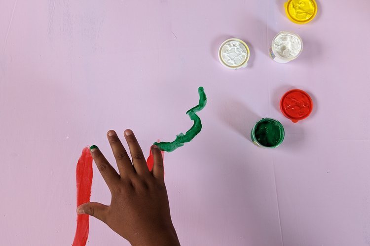

Bildung & Lernen
Jedes Kind macht zuerst mit Hilfe der Freiwilligen seine Hausaufgaben und arbeitet dann mit selbstgebauten Lernspielen an dem, was ihm schwerfällt. Dazu Englisch- und Computerunterricht, den die Schule nicht leistet.
Was das kostetCADSE Cochabamba · Aquisito e.V.
Eine Kooperation zwischen dem Kinder- und Jugendzentrum CADSE in Bolivien und Aquisito e.V. in Deutschland. Wir finanzieren, was Mery und ihr Team in Cochabamba vor Ort für richtig halten.

Was wir tun
Der Tag bei CADSE beginnt mit Schularbeit und endet meistens mit Sport. Was dazwischen passiert, entscheidet das Team in Cochabamba — wir finanzieren es und rechnen es Projekt für Projekt ab.
Jedes Kind macht zuerst mit Hilfe der Freiwilligen seine Hausaufgaben und arbeitet dann mit selbstgebauten Lernspielen an dem, was ihm schwerfällt. Dazu Englisch- und Computerunterricht, den die Schule nicht leistet.
Was das kostetEinmal pro Woche Kunst, einmal Sport. Beim Basteln lernen die Kinder, eigene Ideen zu entwickeln — in der Schule bleibt dafür keine Zeit. Beim Sport blühen Kinder auf, die im Unterricht untergehen.
Was das kostetVon Paprikagesichtern bis zu Kiwi-Schildkröten: gesunde Ernährung wird erklärt, indem sie zubereitet wird. Seit ein Ofen gespendet wurde, organisiert die Jugendgruppe ihre Pizzatage und Tanzkurse selbst.
Was das kostet
Wo Mery hingeht, da sind auch Kinder.
aquisito
spanische Verniedlichung für „hier“
Das Wort wird vor allem in Cochabamba benutzt. Wir wollen niemandem vorschreiben, was Entwicklungszusammenarbeit ist, und wissen auch nicht immer, wo die meiste Unterstützung gebraucht wird.
Mery und ihr Team kommen selbst aus dem Stadtteil und kennen die Bedürfnisse und Umstände der Familien. Deshalb kann CADSE lokal und gezielt Probleme anpacken — und deshalb entscheidet Cochabamba, nicht Deutschland.
Über uns
Wir sind 5 aktive Mitglieder, alle ehrenamtlich, in Deutschland und in Bolivien. Wenn du Teil der Aquisito-Familie werden möchtest, schreib uns an info@aquisito.de.


Sechs bis zwölf Monate bei CADSE in Cochabamba, teilfinanziert durch das BMFSFJ — oder auf eigene Faust ab drei Monaten.
Zu den EinsatzbereichenPer PayPal, Überweisung oder als Fördermitglied. Alle Finanzberichte seit 2020 sind öffentlich, Position für Position.
Zur SpendenseiteBolivianische Rezepte, gesammelt von der Aquisito-Familie. Der ganze Erlös geht an CADSE in Cochabamba.
Zum Kochbuch